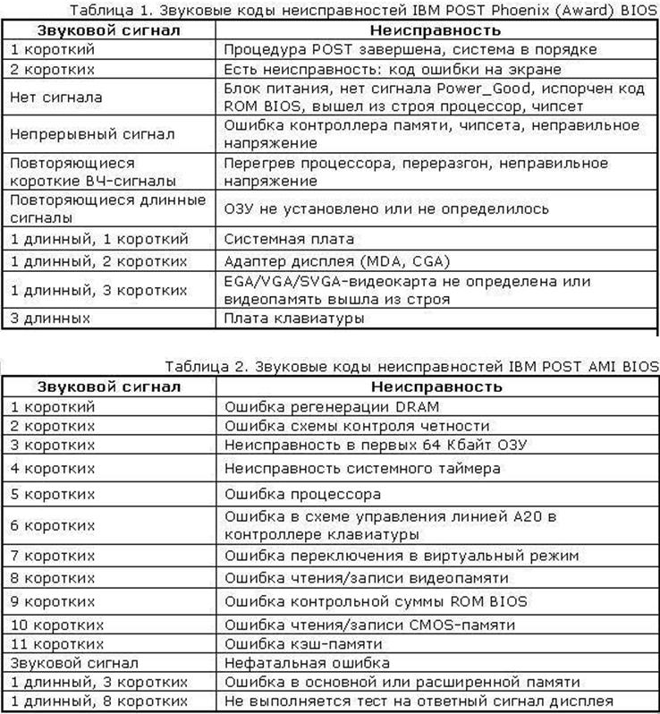
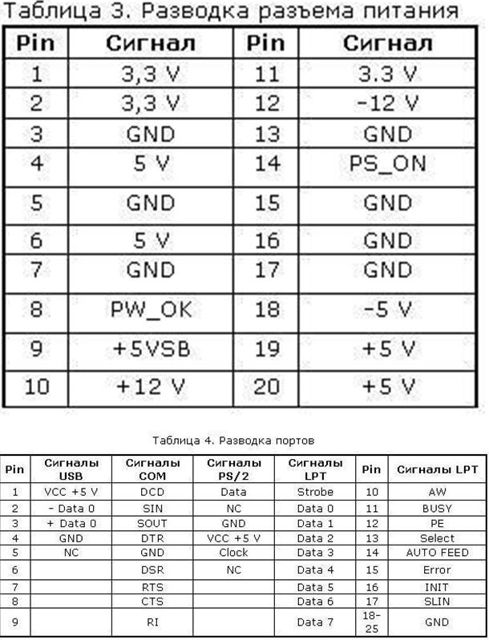

Программно-аппаратная диагностика
Если все вышеперечисленное не помогло определить
поломку, то придется перейти к программно-аппаратной диагностике. А для того,
чтобы она прошла успешно необходимо точно знать, каков порядок включения
устройств ПК.
Итак, рассмотрим порядок загрузки компьютера.
В общем-то все. Что касается последнего пункта, то
ошибки указанные в нем говорят о неисправности винчестера (программной или
аппаратной). Теперь вам остается только выявить, в какой именно момент
перестает работать ваш компьютер. Если это происходит до появления сообщений на
мониторе, то неисправность можно определить по звуковым сигналам. Наиболее
часто встречающиеся звуковые сигналы приведены в таблице.

Стоит заметить, что звуковые сигналы могут отличаться
от приведенных выше из-за различия версий BIOS. Если же и звуковые сигналы не
помогли определить неисправность, то остается лишь уповать на аппаратную
диагностику. Она производится несколькими средствами.
Аппаратная диагностика
Первое средство весьма банально, но вполне действенно.
Работу отдельных блоков можно проверить, дотронувшись до них рукой, чтобы
проверить их нагрев. После минутного включения должны греться чипсет,
процессор, чипы памяти и блоки видеокарты. Если они кажутся теплыми, то этого
достаточно, чтобы сделать вывод хотя бы о том, что на эти элементы подается
питание. С большой долей вероятности они должны оказаться рабочими.
Второе средство более научно и требует некоторой
инженерной подготовки. Заключается оно в измерении потенциалов на различных
элементах. Для этого нужен тестер и осциллограф. Желательно иметь карту
разводки материнской платы, поскольку она многослойная, и прохождение сигналов
не так очевидно. Начать измерения стоит с силовых элементов входных цепей и
стабилизирующих и шунтирующих конденсаторов, проверить наличие +3,3 и +5 В в
соответствующих местах материнской платы, работу тактовых генераторов. После
этого стоит проверить наличие штатных сигналов на выводах сокета процессора.
Далее проверить наличие сигналов в слотах и портах. В последнюю очередь стоит
заняться логическими элементами (хотя ремонт их часто оказывается делом
неразумным). Для этого вам потребуется знание разводки портов и слотов. Эта информация
приведена в таблицах.

Третье и последнее средство диагностики – профессиональные аппаратные средства диагностики. К ним относится использование диагностических карт типа ДП-1 и комплекса PC-3000, созданных компанией «РОСК». Диагностическая плата устанавливается в свободный слот материнской платы, и после включения ПК на ее индикаторе отображается код ошибки в шестнадцатеричном виде. Применение такой платы существенно повышает вероятность локализации неисправности. Использование ДП-1 рассчитано на корректную работу процессора, а CPU выходит из строя крайне редко.
На данный момент в России диагностические карты, тестовые ROM BIOS и другие средства диагностики производятся компанией ACE Laboratory.
При аппаратной диагностике следует иметь ввиду, что в большинстве случаев выходит из строя только одно устройство, и проще всего его выявить, заменив на аналогичное, гарантированно работающее.
Что касается блоков питания и периферийных устройств, то диагностика неисправностей в них – тема отдельного разговора, но по поводу мониторов можно дать ряд советов. Достаточно часто из строя выходит промежуточный строчный трансформатор, включаемый между предоконечным и выходным транзистором строчной развертки. Основной его неисправностью, как правило, бывает короткое замыкание витков. Этот трансформатор – часть высоковольтного блока строчной развертки. Это высокое напряжение подается на ЭЛТ. Поэтому часто отсутствие свечения на экране и отсутствие растра указывают на отсутствие высокого напряжения. Как правило, вертикальная полоса на экране также указывает на отказ блока строчной развертки. Проверить наличие высокого напряжение на ЭЛТ можно проведя рукой по поверхности экрана. Если высокое напряжение подается, то вы должны почувствовать некоторую вибрацию или потрескивания статического электричества.
Если же ваш компьютер все же включается, но работает нестабильно, зависает при загрузке, «выпадает» в синий экран, то это чаще всего является следствием переразгона, локального перегрева или «глючностью» памяти, а также ошибками работы HDD (к ним относится и «падение» Windows).
Стабильность их работы можно проверить под DOS, загрузившись c системной дискеты или диска. Для этого следует использовать утилиты CheckIT, PC Doctor, Memtest 86, Stress Linux, Norton Diagnostics, The Troubleshooter. Для профессионального тестирования и восстановления HDD следует использовать HDDUtility и MHDD, но они корректно работают только под MS-DOS 6.22. Первое, что требуется сделать с помощью них – проверить SMART-атрибуты состояния HDD. Также для диагностики, проверки и пометки bad-секторов можно использовать Norton Disk Doctor.
Следует помнить, что полноценную проверку железа
можно произвести только под Windows, тестируя стабильность работы в burn-in тестах
в течение не менее чем 24 часов. Среди таких тестов можно привести CPU Hi-t Professional Edition, CPU
Stability Test, Bionic CPU Keeper, CPU Burn, Hot CPU Tester Pro, HD_Speed,
DiskSpeed 32, MemTest.
А вообще, как известно, гораздо легче предупредить событие, чем исправить его последствия, поэтому гораздо легче регулярного (хотя бы раз в несколько недель) следить за параметрами выдаваемых блоком питания напряжений, смотреть SMART-параметры HDD (программы Active SMART, SMARTVision, SMART Disk Monitor), изучать температуру процессора, проверять наличие хорошего охлаждения и отсутствие посторонних звуков. Нелишним было бы и смазывание вентиляторов машинным маслом, как минимум раз в полгода.